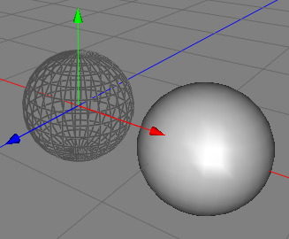

|
Transform ModifierThe transform modifier is probably the most unspectacular modifier. Nevertheless it could be very hand for some purposes. The transform modifier just transform the polygons from the local coordiante system of it's parent object into the local coordinate system of the modifer itself. Therefor you can tranlate, rotate and scale the object within the nondestructive modifier chain.  Properties
|